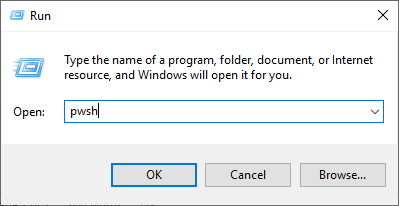

Introduction¶
This guide details the process required for joining the Cirrus Sidechain as a Block Producing Node, known as an InterFlux Masternode. The request to join the Cirrus Sidechain as a block producer, requires you to effectively setup an InterFlux Masternode, therefore, a request to join the Cirrus Sidechain will be made once the Masternode is fully configured.
Pre-Requisites¶
To join as a InterFlux Masternode, there are a number of criteria that must be met.
Wallet Requirements¶
You must know the mnemonic and passphrase (if applicable) for a STRAX Wallet that contains the required collateral and fee.
Collateral Amount: 100,000 STRAX
Fee Amount: 501 STRAX
Sidechain Masternode Hardware Requirements¶
The below hardware requirements are a minimum.
2x vCPU / Dual Core
8GB RAM
50GB SSD / HDD
Sidechain Masternode Software Requirements¶
There are only three pre-requisites software installations that need to take place before operating a InterFlux Masternode.
.NET Core SDK¶
.NET Core is the platform that the InterFlux Masternode has been developed upon. Therefore, you will need to install the .NET Core SDK.
Please install the latest version of .NET Core SDK 3.1
Git for Windows¶
Navigate to the URL below to download the Git for Windows Installer. This should be the topmost file with .exe extension.
PowerShell Core¶
To provide cross-platform support moving forward, the script that is utilized to configure and launch the InterFlux Masternode uses PowerShell Core.
https://github.com/PowerShell/PowerShell/releases
For simplicity, it is recommended you download and install the MSI relevant for your operating system.
Network Requirements¶
There are three firewall rules required to allow connectivity between your InterFlux Masternode and other nodes on the network.
Rule Name |
Direction |
Protocol |
Port |
|---|---|---|---|
StraxMain |
Inbound |
TCP |
17105 |
CirrusMain |
Inbound |
TCP |
16179 |
ICMP |
Inbound |
ICMPv4 |
N/A |
Wallet Configuration¶
It is recommended that you create a new wallet when completing this process, so your STRAX Tokens can be separated from any other STRAX Tokens you may hold.
Download the STRAX Wallet and Create a New Wallet
https://github.com/stratisproject/StraxUI/releases
Please ensure you take note of your Mnemonic and Passphrase. These will be required later in the process
Download Cirrus Core and Create a New Wallet
https://github.com/stratisproject/CirrusCore/releases
Please ensure you take note of your Mnemonic and Passphrase. These will be required later in the process
Login to your STRAX Wallet
{kind=link}
Obtain a Receive Address and send 100,501 STRAX to this address

You will have to wait for 100% Wallet Synchronization before seeing your balance
Login to your Cirrus Core Wallet
{kind=link}
Select Address 0
{kind=link}
Obtain a Receive Address
{kind=link}
Perform a Cross-Chain Transfer of 500.9 STRAX to your Cirrus Address
{kind=link}
The Cirrus Core Wallet will receive 500.8~ CRS after 80 Blocks have passed on the STRAX Blockchain (~1Hr)

Now, you must consolidate the STRAX Balance to ensure it all resides in a single address. To do this, obtain another Receive Address and send 100,000 STRAX
{kind=link}
You are sending back to an address that you own. Not an external address.
Your resulting balance and transaction history should look very similar to the below
{kind=link}
Wallet preparation is now complete; you should now be in position of the following.
STRAX Wallet that contains 100,000+ STRAX Tokens.
The Mnemonic and Passphrase for the aforementioned wallet.
Cirrus Wallet that contains 500+ CRS Tokens.
The Mnemonic and Passphrase for the aforementioned wallet.
You must now wait for 80 Confirmations before the CRS Tokens are received through the Cross-Chain Transaction, in addition, the transaction that was made in Step 10 also requires 500 Confirmations.
InterFlux Masternode Registration¶
Whilst we wait for confirmations, the host that will run your STRAX Sidechain Masternode configured and prepared to launch the STRAX Federation Join Script.
Please ensure you meet the requirements set out at the beginning of this guide, before you continue.
You must now create a key-pair that will be used to identify your registration on-chain.
Stratis Keygen Utility¶
Download the Stratis Keygen Utility using the below URL
https://www.stratisplatform.com/wp-content/uploads/2020/11/Stratis-KeyGen-Utility.zip
Open Stratis KeyGen Utility.zip and extract the contents to a new location, in this example we are extracting to C:\Stratis
{kind=link}
Navigate to “Stratis KeyGen Utility\Stratis KeyGen Utility”
{kind=link}
Locate the executable named “StratisFederationApp.exe”
{kind=link}
Double-Click the “StratisFederationApp.exe” to launch the utility
{kind=link}
Select ‘Federated Masternode (100K Collateral Requirement)’ and enter a Passphrase
{kind=link}
Select a location to save the “federationKey.dat” file
Click the “Generate Keys” button
{kind=link}
You must take note of the Public Key, Passphrase and keep a secure copy of the federationKey.dat file.
Obtain the InterFlux Masternode Registration Script¶
A script has been constructed to ease the setup process and ensure consistency, the script can be obtained from the below URL.
Extract the STRAX Sidechain Registration Launch Script.PS1 Script to the Desktop of the where you are intending to run your Masternode.
Verifying the Script¶
Stratis Group Ltd will digitally sign any PowerShell Script that they provide for operating one of their products.
This can be verified by right-clicking the PS1 script, selecting properties and viewing the digital signature.
Highlight the listed signature and select “Details”
{kind=link}
Select “View Certificate”

Verify the issuing information in the Certification Path to ensure the authenticity of the script.
{kind=link}
Executing the Registration Script¶
As the script is written in PowerShell Core, it needs to be called from an instance of PowerShell Core and not the standard PowerShell that is shipped with all latest versions of Windows Operating Systems.
To launch PowerShell Core, you will need to invoke it from the command line or run command.
{kind=link}
Clicking OK on the above will launch a new instance of PowerShell Core

Assuming that the launch script is located on the desktop, you will need to navigate to the desktop, this can be achieved by executing the below command.
Set-Location .\Desktop\
The PowerShell Core script can now be invoked from the PowerShell Core window using the below command.
& '.\STRAX Sidechain Registration Launch Script.ps1'
The PowerShell Core instance should look something like the below.
{kind=link}
The script will now launch and synchronize both the STRAX Blockchain and the Cirrus Sidechain, this may take some time and is wholly dependent on your specifications. Once complete, you will see the below.
{kind=link}
Enter the Name of your STRAX Wallet from the Wallet Configuration section earlier in this guide.
{kind=link}
As the Wallet does not exist (assuming the script is running on a different machine as to where the wallets were created) you must enter ‘Yes’ to perform the wallet restoration within the script.
{kind=link}
Enter the mnemonic that were generated earlier
{kind=link}
Enter your passphrase
{kind=link}
Enter a password that will be used to encrypt the restored wallet
{kind=link}
The wallet will now begin to synchronize with the blockchain
{kind=link}
Once complete, you will be prompted to enter in the Cirrus Core Wallet detail
{kind=link}
Follow the steps as before to restore your wallet, once complete, the synchronization may take some time.
{kind=link}
Once complete, you will be prompted to enter the path to your federationKey.dat that you generated earlier using the Stratis Keygen Utility.
{kind=link}
Now, you must enter the Collateral Address that holds the 100,000 STRAX. Balances can be queried on the Block Explorer to ensure that the correct address is entered.
{kind=link}
After entering the Collateral Address the Registration Transaction will be made
{kind=link}
Enter “Yes” to perform the transaction, once complete you will receive confirmation. You now have 240 Confirmations before your Masternode will be accepted into the federation and able to produce blocks.
Running the InterFlux Masternode¶
Congratulations, you are now able to operate an InterFlux Masternode!
Now you have performed registration, you can run your Sidechain Masternode by clicking next and following the Running an InterFlux Masternode guide.